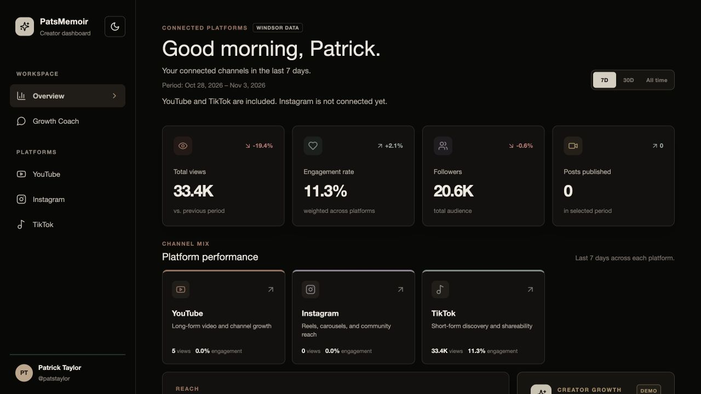

Builder / Patrick Taylor
Ideas into useful things.
I enjoy building with AI—especially when the result solves a problem I’ve experienced myself.
PatsMemoir Creator Analytics
Deployed on Vercel · Connected analytics
Open live dashboard View the repository
The problem
As a creator, I wanted to see my social analytics in one place instead of moving between platforms.
From prototype to a deployed product
I took the project from sample-data screens to a public dashboard that retrieves my YouTube and TikTok analytics through Windsor.ai. It includes a combined overview, individual platform pages, separate charts for views, followers and engagement, and published-content tables with links to the original posts.
How it works
Windsor connects the source platforms to server-side adapters in Next.js. TypeScript defines the shared data structure, and React displays the metrics in a responsive interface styled with Tailwind CSS and custom CSS. Vercel hosts the application; the API key stays on the server.
My role & decisions
I defined the requirements, directed implementation, reviewed and tested the results, configured the integrations, and deployed the app. Claude Code and Codex supported development. I separated metrics with different units into individual charts and distinguished reporting-period totals from lifetime video views.
Current scope
YouTube and TikTok are connected. Instagram is pending and shows an empty state. Requests are cached for an hour, with freshness dependent on Windsor and the source platforms. The Growth Coach is a scripted demo. This is a working personal product that I’m continuing to develop.
Raised apparel
From concept to production
I helped build the brand from the ground up, communicated with overseas manufacturers, and produced a tech pack of nine pages to explain the product and quality I wanted.
Getting the details right
The work combined product direction, manufacturer communication, workflow management, and marketing. AI supported the process along the way.
The outcome
Our 50-unit launch sold out within days, generating $3,000+ in revenue. Bringing an idea through production and into customers’ hands is one of the accomplishments I’m most proud of.
Visit RaisedStudent Productivity Prediction
I compared Linear Regression and SGDRegressor on 5,000 synthetic student records using four-fold cross-validation, achieving 4.51 validation RMSE and 4.55 held-out RMSE.
I evaluated L1, L2, Elastic Net, and polynomial configurations, documenting model comparisons and visualizations in a notebook.
Explore the notebookDining Hall Wait Time Prediction
I engineered time, location, and weather features from dining hall observations and trained a Categorical Naive Bayes classifier to predict short, medium, or long waits.
I analyzed pilot congestion data and designed an architecture for crowdsourced wait-time updates.